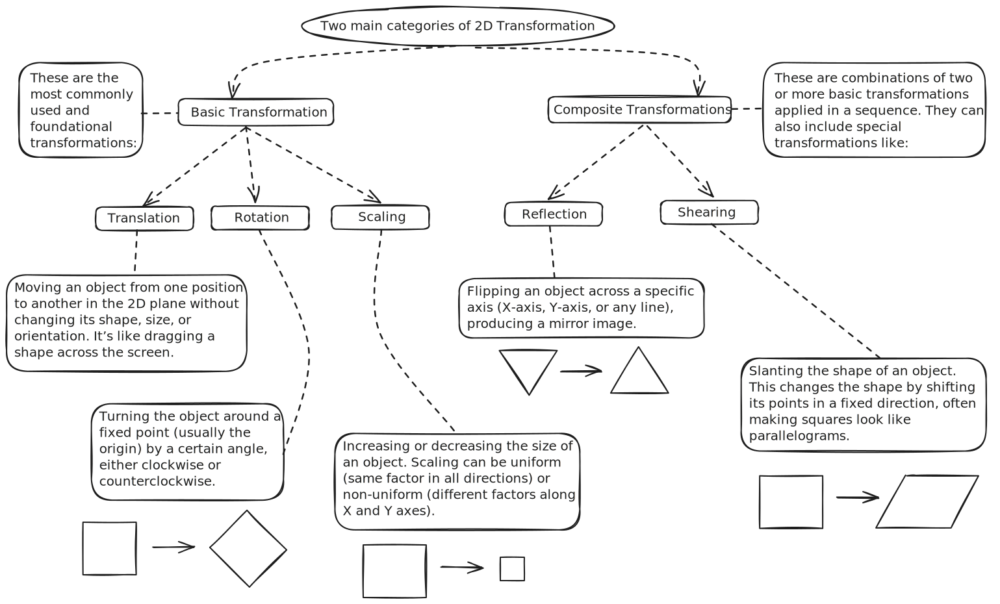
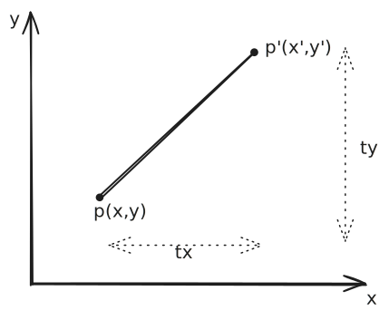
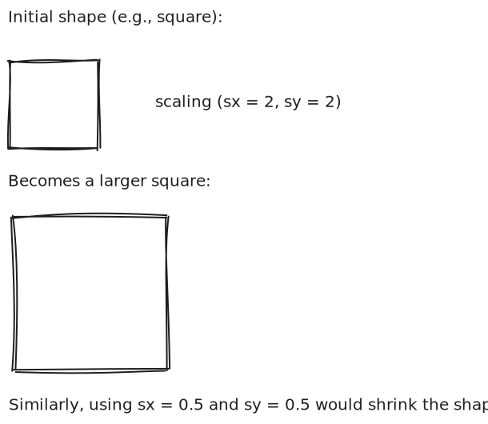
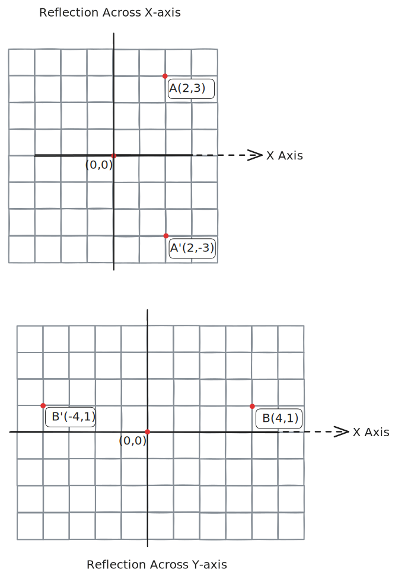

Unit Structure
Computer Graphics: 2D and 3D Transformations
|
├── 1. 2D Transformation
│ ├── Introduction to 2D Transformation
│ ├── Basic Transformations
│ │ ├── Translation
│ │ ├── Rotation
│ │ └── Scaling
│ ├── Composite Transformations
│ │ ├── Reflection
│ │ └── Shearing
│ └── Transformations Between Coordinate Systems
│
└── 2. 3D Transformation
├── Introduction to 3D Transformation
├── Parallel Projection
├── Perspective Projection
├── Visible Lines and Surfaces Identification
└── Hidden Surface Removal Algorithms
- When you're working with computer graphics, you're not just drawing shapes — you're controlling how
those shapes move, rotate, resize, and appear in space. That’s where 2D and 3D transformations come in.
These transformations help bring flat designs to life and add depth and realism to 3D scenes.
- We’ll start with 2D transformations, where you’ll learn the basics like translation, rotation, and
scaling — the building blocks of motion and shape manipulation on a flat plane. Then we’ll move into
composite transformations, which let you combine effects like reflection and shearing for more complex
visual effects. You’ll also explore how these transformations work between different coordinate systems.
- Then we jump into the exciting world of 3D transformations. This is where we add a third dimension to
everything — including parallel and perspective projections (which help mimic how our eyes see the
world). You'll also learn how to identify which parts of 3D objects should be visible and how to hide
the rest using hidden surface removal algorithms.
2D Transformation
- 2D transformation refers to operations that change the position, size, orientation,
or shape of 2D objects in a two-dimensional plane (X-Y plane).
- These transformations are fundamental in computer graphics, animation, and geometric modeling.

- In practice, transformations are often represented using matrices, which allow multiple
transformations to be combined into a single matrix operation using matrix multiplication.
Translation
- Translation is the process of moving an object along a straight path from one coordinate
location to another.
- It is a type of rigid body transformation, meaning the shape and size of the object remain
unchanged (no deformation or rotation occurs).

Q1: Translate a point \( P = (2, 4) \) using the translation vector \( T = (-1, 14)
\). Find the new coordinates \( P' \).
-
Given:
\( P = (2, 4) \)
\( T = (t_x, t_y) = (-1, 14) \)
Apply translation:
\( P' = P + T \)
\( \Rightarrow P' = (x + t_x, \; y + t_y) \)
\( \Rightarrow P' = (2 + (-1), \; 4 + 14) \)
\( \Rightarrow P' = (1, \; 18) \)
Q2: Translate a polygon with vertices \( A(2, 7) \), \( B(7, 10) \), and \( C(10, 2)
\) by 3 units in the X direction and 4 units in the Y direction.
-
Translation vector: \( T = (3, 4) \)
Apply translation to each point:
\( A' = (2 + 3, \; 7 + 4) = (5, \; 11) \)
\( B' = (7 + 3, \; 10 + 4) = (10, \; 14) \)
\( C' = (10 + 3, \; 2 + 4) = (13, \; 6) \)
Scaling
- Scaling is a transformation that changes the size of an object either by enlarging or shrinking
it.
- It is applied by multiplying the original coordinates with scaling factors along the x and y
axes.
- The shape of the object is preserved, but its size changes proportionally or non-proportionally
depending on the scaling factors.

Q1: Scale a point \( P = (3, 5) \) using the scaling factors \( s_x = 2 \), \( s_y =
3 \). Find the new coordinates \( P' \).
-
Given:
\( P = (3, 5) \)
\( s_x = 2, \; s_y = 3 \)
Apply scaling:
\( x' = x \cdot s_x = 3 \cdot 2 = 6 \)
\( y' = y \cdot s_y = 5 \cdot 3 = 15 \)
\( \Rightarrow P' = (6, \; 15) \)
Q2: Scale a triangle with vertices \( A(1, 2) \), \( B(4, 2) \), and \( C(1, 6) \)
using scaling factors \( s_x = 0.5 \), \( s_y = 2 \).
-
Scaling vector: \( s_x = 0.5, \; s_y = 2 \)
Apply scaling to each point:
\( A' = (1 \cdot 0.5, \; 2 \cdot 2) = (0.5, \; 4) \)
\( B' = (4 \cdot 0.5, \; 2 \cdot 2) = (2, \; 4) \)
\( C' = (1 \cdot 0.5, \; 6 \cdot 2) = (0.5, \; 12) \)
Reflection
- Reflection is a transformation that produces a mirror image of a shape or point across a
specified axis (X-axis, Y-axis, or line \( y = x \)).
- The size and shape of the object remain unchanged, but the orientation may change depending on
the axis of reflection.
- It is a rigid body transformation, meaning no distortion occurs—only position changes.

- Reflection axes:
- X-axis → mirror across horizontal axis
- Y-axis → mirror across vertical axis
- Line \( y = x \) or \( y = -x \) → diagonal mirror
- The reflection equations are:
- Across X-axis: \( x' = x, \; y' = -y \)
- Across Y-axis: \( x' = -x, \; y' = y \)
- Across line \( y = x \): \( x' = y, \; y' = x \)
- Matrix representations:
Across X-axis:
\(
\begin{bmatrix}
x' \\
y'
\end{bmatrix}
=
\begin{bmatrix}
1 & 0 \\
0 & -1
\end{bmatrix}
\begin{bmatrix}
x \\
y
\end{bmatrix}
\)
Across Y-axis:
\(
\begin{bmatrix}
x' \\
y'
\end{bmatrix}
=
\begin{bmatrix}
-1 & 0 \\
0 & 1
\end{bmatrix}
\begin{bmatrix}
x \\
y
\end{bmatrix}
\)
Across line \( y = x \):
\(
\begin{bmatrix}
x' \\
y'
\end{bmatrix}
=
\begin{bmatrix}
0 & 1 \\
1 & 0
\end{bmatrix}
\begin{bmatrix}
x \\
y
\end{bmatrix}
\)
Q1: Reflect a point \( P = (3, 7) \) across the X-axis. Find the coordinates of \(
P' \).
-
Given:
\( P = (3, 7) \)
Axis: X-axis
Apply reflection:
\( x' = x = 3 \)
\( y' = -y = -7 \)
\( \Rightarrow P' = (3, -7) \)
Q2: Reflect a triangle with vertices \( A(1, 4) \), \( B(5, 2) \), and \( C(3, 6) \)
across the Y-axis.
-
Axis: Y-axis
Apply reflection to each point:
\( A' = (-1, 4) \)
\( B' = (-5, 2) \)
\( C' = (-3, 6) \)
Introduction to 3D Transformation
- Okay, imagine you're playing a 3D video game. You're moving around the game world — going forward,
rotating to see behind, or zooming in and out. What's actually happening behind the scenes is 3D
Transformation.
- Just like we had 2D transformations (moving, rotating, resizing in a flat plane), we now want to
move and manipulate objects in a 3D space. This means we work with three axes:
- X-axis → left–right
- Y-axis → up–down
- Z-axis → forward–backward (depth)
Why do we need 3D transformations?
- To move objects around in a 3D world.
- To rotate or scale them realistically.
- To simulate how things look in the real world when seen from different angles.
- So instead of dealing with points like (x, y) in 2D, we now deal with (x, y, z) in 3D.
| Transformation Type |
Description |
Example |
| Translation |
Move an object in 3D space |
Moving a cube 3 units up and 2 right |
| Rotation |
Rotate around X, Y, or Z axis |
Turning a box 90° to the right |
| Scaling |
Resize in 3D (wider/taller/etc.) |
Making a ball 2× bigger in all axes |
- Let's now see how 3D gets converted into 2D for our screens!
Parallel Projection
- Let's say you want to draw a 3D object (like a cube) on a 2D screen (like your laptop). But our
screen is flat — so how do we show depth?
- One way is parallel projection.
What is it?
- Parallel projection is like tracing a shadow of a 3D object using light rays that are parallel
to
each other. No matter how far the object is, its size doesn't change on the screen.
- Think of it like architectural blueprints:
- A wall that is far away looks the same size as a closer wall.
| Property |
Parallel Projection |
| Depth perception |
No (objects look same size) |
| Rays |
Parallel |
| Use Case |
Engineering, CAD drawings |
Types of Parallel Projections:
| Type |
Description |
| Orthographic |
Projectors are perpendicular to the screen. |
| Oblique |
Projectors are at an angle. |
- Orthographic is like a front-view or top-view drawing. Oblique adds a bit of angle to show more
dimensions.
Perspective Projection
- Now, let's make things look more realistic.
- In real life, when you look at a road, it seems to narrow down as it goes farther, right? That's
perspective.
What is Perspective Projection?
- It uses rays that converge at a point (like your eye or a camera). So, objects closer to the
viewer
look bigger, and those far away look smaller — just like in real life!
| Property |
Perspective Projection |
| Depth perception |
Yes (looks realistic) |
| Rays |
Converging |
| Use Case |
Games, 3D animations, VR |
- There are different types of perspective projections:
| Type |
Description |
| One-point |
One vanishing point (like a hallway view) |
| Two-point |
Two vanishing points (like a building corner) |
| Three-point |
Adds a third vanishing point (for tall scenes) |
Visible Lines and Surfaces Identification
- Alright, now we know how to project a 3D object onto 2D.
- But there's a problem...
- If you're looking at a cube, you don't want to see the back side of it, right?
- So, we need to identify which lines and surfaces should be visible to the viewer.
How does it work?
- The system checks:
- Which faces are facing towards the camera/viewer.
- Which ones are turned away (and therefore invisible).
- Imagine you're holding a cardboard box. You can see the front, top, and one side. The system
calculates that and only shows those parts.
| Concept |
Example |
| Back-face culling |
Hide faces that point away from viewer |
| Front-face rendering |
Show only visible surfaces |
- This step cleans up the image and reduces the number of calculations needed in rendering.
Hidden Surface Removal Algorithms
- Okay, final piece of the puzzle!
- Now, imagine a 3D model of a city. There are tons of buildings, and some are in front of others.
- We don't want to draw things that are blocked from view, right? That wastes time and resources.
- So we use Hidden Surface Removal Algorithms.
What do they do?
- These algorithms figure out which surfaces or parts of objects are not visible from the viewer's
position — and remove or skip them during rendering.
| Algorithm |
Description |
| Z-buffer |
Keeps track of depth (z-value) of each pixel and draws only the closest. |
| Painter's Algorithm |
Draws far objects first, then closer ones on top (like painting layers). |
| BSP Trees |
Breaks the scene into front/back using planes. |
Real-world Example:
- In video games, when you're walking through a building, the system uses these algorithms so you
only
see the visible walls — not all the ones behind or hidden.
Summary
- Here's a quick table to wrap up what we just learned:
| Topic |
Key Idea |
| 3D Transformation |
Moving/rotating/scaling 3D objects in space |
| Parallel Projection |
Flat, non-realistic view (good for diagrams) |
| Perspective Projection |
Realistic view with depth |
| Visible Lines/Surfaces |
Identify what parts of 3D shapes should be shown |
| Hidden Surface Removal Algorithms |
Hide or skip parts that are blocked or not visible to the viewer |